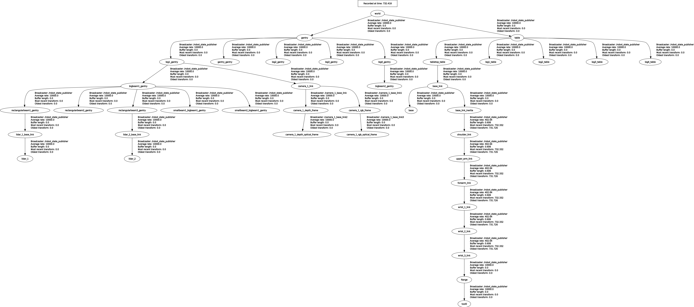
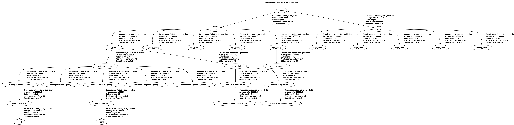

Calibration with real hardware
This week's progress:
- Placement of the sensors mimicking the simulation setup
- Recording of rosbag using real data
- Adaptation of methodology for a centered camera
- Setting initial estimate in real setup
- Collecting data and obtaining collections with real setup
- Callibration with data obtained with real hardware
TODO
- Check inconsistencies in calibration results with real data
Tf tree in simulation vs tf tree with real hardware
Simulation

(zoom)
Real setup

(zoom)
Demonstration of initial estimate
Demonstration of data collecting
Demonstration of calibration procedure (initial guess noise 0, 0 - tol 10e-6)
Demonstration of calibration procedure (initial guess noise 0.2, 0.2 - tol 10e-6)
Issues
calibration in simulation mode - open